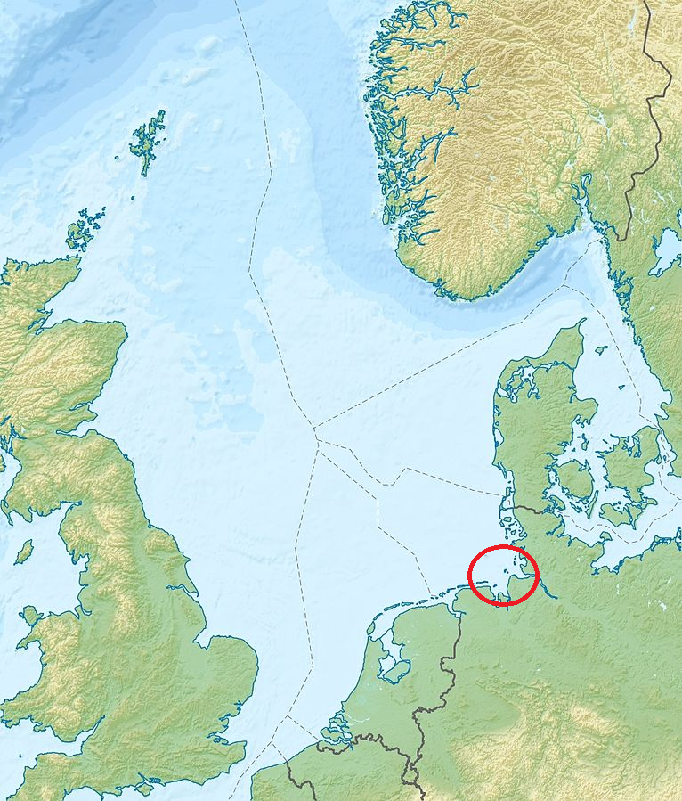
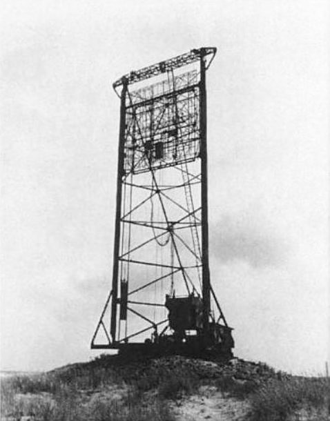
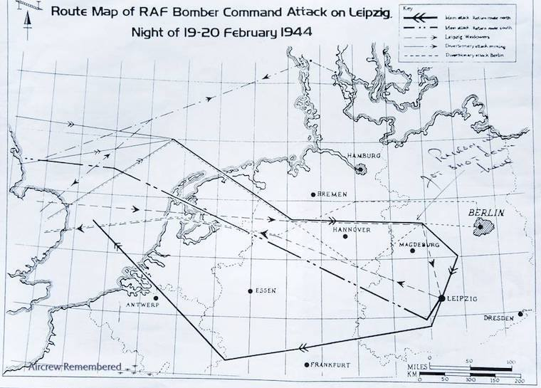
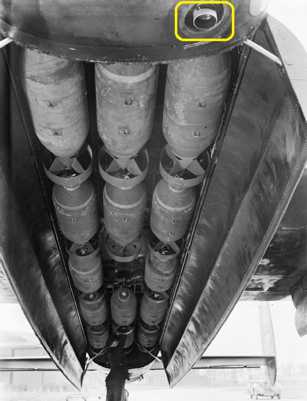
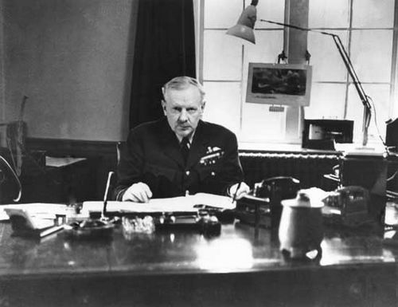

레이더 개발 이야기 (29) - 한밤중의 길찾기
게시: 2023-04-13T06:30:38+09:00
<독일놈들 머리는 장식품이 아니다> 소위 Battle of Britain이라고 불리는 싸움은 1940년 9월부터 1941년 6월까지 루프트바페의 영국 폭격 및 그에 대한 로열 에어포스의 요격이 주된 양상이었지만, 그 이전부터도 로열 에어포스도 당하고만 산 것은 아니었고 바다를 건너 독일군 목표물에 대해 폭격을 단행. 1939년 말까지만 해도 로열 에어포스의 폭격기들은 (아직 프랑스 항복 이전이었으므로) 프랑스 동부의 전선이나 네덜란드, 그리고 발트 해 연안의 각종 섬과 독일 해군 기지 등에 대해 과감한 폭격 작전을 주간에 실시. 이유는 유럽 대륙은 넓고 루프트바페의 전투기는 한정적이었으므로 로열 에어포스 폭격기들에 대한 요격이 그다지 조직적이지도 효율적이지도 못했기 때문. 그러나 1939년 12월 18일, 22대의 Vickers Wellington 폭격기들이 헬리골란트 만의 Wilhelmshaven 항구를 공격할 때, 한 떼의 루프트바페 전투기들이 그 길목을 지키고 있다가 정확하게 달려들어 개박살을 내놓음. 결국 22대의 웰링턴 폭격기들 중 10대가 격추되었고 2대는 손상을 입고 바다에 불시착했으며 기지로 돌아온 10대 중 3대는 손상이 너무 커 폐기처분될 정도. 독일 전투기들의 피해는 딱 2대.

(헬리골란트 만의 위치)
이 참사의 원인은 바로 레이더. 독일놈들도 머리통을 장식으로 달고 다니는 것은 아니었기 때문에 걔들도 Freya라는 레이더를 연구하고 있었고, 그것이 실험적으로나마 1939년 말부터는 가동이 되기 시작했는데 그 첫 성과가 바로 22대의 웰링턴 폭격기 편대였던 것. 이후 로열 에어포스의 폭격은 주로 야간에 수행됨. 그런데 거기서 결국 제대로 된 항법사 부족이 큰 문제를 야기하기 시작.

(독일 레이더 Freya. 비슷한 시기에 만들어진 영국 레이더 Chain Home에 비해 더 짧은 파장의 전파를 쓰고 더 작게 만들 수 있었으므로 더 진보된 형태의 레이더로 평가되었으나 대신 탐지거리도 160km 정도로 더 짧고 구조가 더 복잡하여 생산이 쉽지 않아 개전 초기에는 8대만 가용한 상태였다고.)
(스웨덴 화가 John Bauer의 1905년 작품 Freja. 원래 북유럽 신화에서 사랑의 여신.)
<영국놈들 폭탄 던지는 꼬라지 좀 보소> 로열 에어포스가 그렇게 독일 레이더 프레야 때문에 야간 폭격으로 전환하자 당장 문제가 터져나오기 시작. 아무것도 안 보이는 한밤중에 루르 공업지대는 고사하고 가까운 프랑스 내의 목표물까지도 찾아갈 수 있는 항법사가 부족했던 것. 군대란 창의성이 넘쳐나는(?) 곳이라서 갖가지 아이디어가 나옴. 가령 어차피 폭격기들은 편대를 이루니 그 중 맨 선두의 1대에만 천문항법이 가능한 고급 항법사를 태우는 것이 대표적. 그러나 어둠 속에서 선두 편대기를 잘 찾지 못하고 이탈하는 찌질한 폭격기도 발생. 그래서 그렇게 낙오한 폭격기를 유도하기 위해 선두 폭격기 꼬리에 작은 불꽃 신호(flare)를 밝히기도. 이건 또 (WW2 초기엔 그다지 활동이 많지 않았지만) 독일 야간 전투기를 불러모으는 역효과를 내기도 함. 그러나 아무래도 군대는 창의성보다는 꼼수가 판을 치는 곳. 폭격기 조종사들이 찾은 가장 좋은 꼼수는 그냥 dead reckoning (추측항법)으로 대략 여기가 목표 지점이라고 생각되는 곳까지 날아간 뒤에 '여기가 독일 공장 위다 여기가 독일 공장 위가 맞다'라며 주문을 외우면서 폭탄을 투하하고 그냥 돌아온 뒤에 '성공적인 폭격으로 독일놈들을 다 박살냈습니다'라고 보고하는 것. 그걸 평가할 사람도 없고 독일놈들도 실제 피해를 신문에 상세히 보도하지는 않을 것이니 누이 좋고 매부 좋은 솔루션이었던 것.

(라이프치히를 폭격하는 폭격기들의 항로입니다. 곡선이 아니라 직선인 이유는 dead reckoning을 주된 항법으로 사용하기 때문입니다. 아무 곳에서나 선회를 하지 않고 정확하게 일정한 속도로 날다가 지정된 곳에서 지정된 각도로 선회를 해야만 했습니다. 물론 실제로는 오차가 있기 마련인데다 변화하는 측풍과 역풍, 순풍 등으로 인해 진짜 dead reckoning 기법만 이용할 경우 100km 단위의 오차가 났다고 합니다.)
하지만 로열 에어포스도 뭔가 좀 이상하다고 생각했는지 결국 폭격기 폭탄창 옆에 기록용 카메라를 장착하기 시작. 거거서 얻은 사진을 통해 폭격이 제대로 이루어지는지, 과연 폭격 효과는 어땠는지 평가를 시작. 그런 사진 평가, 그리고 각종 첩보를 통해 모은 정보를 모아서 로열 에어포스 폭격기 사령부의 성과를 평가한 보고서가 1941년 8월 18일 드디어 발간됨. 이른바 Butt report. 영국 국방성 비서실 소속의 David Bensusan-Butt라는 사람이 총괄을 맡아 만든 이 보고서의 내용은 그야말로 충격적. 다만 정작 당사자인 폭격기 사령부의 조종사들만 '젠장 들켰네'라며 담담했다고.

(Lancaster 폭격기의 폭탄창. 사진 맨 위 오른쪽 노란색 사각형 안에 카메라 렌즈가 보임. 저것이 Butt 보고서의 근거가 된 사진들을 수집한 카메라.)
과연 그 내용이 어땠길래?
<달빛에 의존하여 컨닝을 한 영국인의 수학 실력> Butt 보고서의 내용을 한 줄 정리하면, 폭격기들이 실제로 목표물 근처까지라도 날아간 비율이 엄청나게 낮다는 것. 그 보고서 내용을 세부적으로 보면 뭔가가 느껴질 거임. 1. 목표물에 성공적으로 폭탄을 투하했다고 보고된 폭격기 중 실제로 목표물의 8km 이내까지라도 접근했던 폭격기는 전체의 33%에 불과. 2. 프랑스 항구들에서는 그 비율이 66%로 늘어남. 독일 전체로 보면 그 비율은 25%. 루르(Ruhr) 공업지대로 보면 비율은 10%로 확 떨어짐. 3. 보름달이 떴을 경우 비율은 40%로 늘어남. 초승달인 경우엔 7% 이하. 4. 이 모든 숫자는 목표물에 폭탄을 성공적으로 투하했다고 보고한 항공기에만 해당되는 것임. 상당수 폭격기들은 고장이나 날씨, 적 전투기 및 대공포 등으로 인해 아예 목표물에 도착하지 못했다고 보고했으니 전체 비율은 더 낮아서... 출격한 폭격기 중 목표물 8km 이내에 도달한 폭격기는 고작... 5%.
결국 거리가 가깝고 달이 있어서 지상을 볼 수 있으면 목표 도달율이 높아졌는데, 뜻하는 바는 결국 천문항법으로 찾아간 것이 아니라 지상의 지형을 컨닝해서 찾아갔다는 이야기.
폭탄 투하한 폭격기의 33%는 그래도 성공적으로 목표물을 타격했다고 생각해서는 안 됨. 목표물 상공 8km 이내에 도달했다는 것과 목표물 파괴와는 완전히 다른 이야기임. 종전 이후 조사된 바에 따르면, 1940년 5월부터 1941년 5월까지 1년 사이에 실제 투하된 폭탄의 49%는 그냥 아무 것도 없는 벌판에 떨어졌음. 나머지 51%는 목표물을 맞췄다는 것이 절대 아님. 공장을 부수라고 폭탄을 투하했는데 그 옆의 노동자 숙소를 부쉈다든지, 엉뚱한 마을 교회를 부쉈다든지 하는 것들이 대부분. 이 보고서 발간으로 여태껏 쳐온 허풍이 까발려진 폭격기 사령부(Bomber Command)는 자숙에 들어갔을까? 당근 아님. 이들은 벗 보고서의 통계에 중대한 오류가 있다면서 다른 보고서를 작성하여 1941년 9월 발간. 이 보고서는 4천대의 폭격기를 동원하면 인구 10만 이상의 독일 도시 43개를 지워버릴 수 있다고 주장. 지들이 지들 입맛대로 만든 이 보고서를 근거로, 로열 에어포스 참모총장인 Charles Portal 경은 폭격기 4천대를 갖추어주면 6개월 안에 전쟁을 종결짓겠다고 호언장담. 이렇게 계속된 허풍은 전쟁에 대한 실질적인 기여와는 별도로 각 군이 서로 잇속을 챙기려던 정치적 싸움 때문. 폭격기 4천대를 갖출 예산은 몇 개 기갑 연대 혹은 항모 몇 척을 만들 수 있는 돈. 하다못해 같은 로열 에어포스 내에서도 "효과도 의심스러운 폭격기에 돈을 낭비하느니 당장 가장 중요한 대서양 수송로를 지키기 위해 해양 초계기에 투자를 해야 한다"라며 연안방위 사령부(Coastal Command)가 다른 목소리를 냈음. 이런 폭격기 무쓸모론에 대해서는 레이더 연구에 참여했던 캠브리지 대학 교수 A. V. Hill이 영국 하원에서 연설한 내용 중 일부가 가장 잘 드러남. "전쟁 발발 이후 독일의 폭격으로 발생한 영국인 사망자는 싱가폴에서 발생한 영국군 포로 숫자의 2/3에 불과합니다... 독일의 폭격으로 발생한 산업 피해는 가장 심각했던 달의 피해조차도, 평소 우리의 부활절 연휴로 인한 생산감소액 정도에 불과합니다... 공군 사령부(Air Ministry)는 지나치게 낙관적입니다... 우리가 투하한 폭탄 대부분은 전혀 부술 가치가 없는 곳에 떨어졌다는 것을 우리는 잘 알고 있습니다..." 그렇게 폭격기 무쓸모론이 기세를 얻고 있었지만, 그렇다고 전쟁을 하는데 폭격기를 안 쓸 수도 없는 노릇. 이 모든 것은 로열 에어포스 항법사들이 삼각함수를 못하기 때문에 발생한 일. 그런데 여기서 독일 루프트바페의 항법 솜씨는 괜찮았을까? 힐 교수의 연설에서도 드러나듯 독일 애들의 수학 솜씨도 안 봐도 비디오. 루프트바페가 투하한 폭탄 중 가치있는 목표에 피해를 준 것은 25% 수준. 30%는 그나마 사람이 거주하는 곳에 떨어졌으나 45%는 그냥 텅 빈 벌판에 떨어짐. 그런데 그래도 독일 폭격기는 한밤중에 영국 도시에 곧잘 날아왔음. 걔들의 비결은 무엇이었을까?

(폭격기 사령부 사령관 (commander in chief of the Royal Air Force Bomber Command) Arthur Travers Harris. 흔히 '폭격기' 해리스라고 불린 이 양반을 탓하기 쉬우나 이 양반이 사령관이 된 것은 1942년부터였고 1941년 이전의 삽질은 이 양반 탓은 아니었음.)